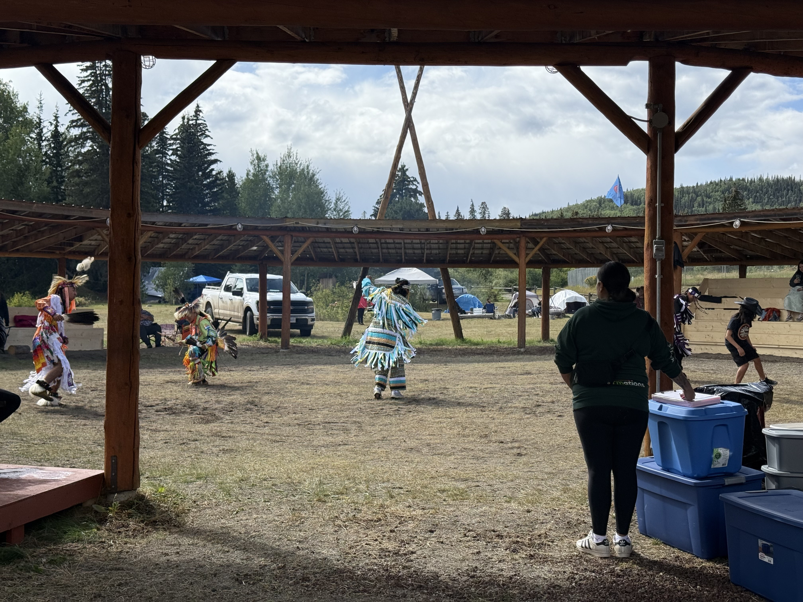
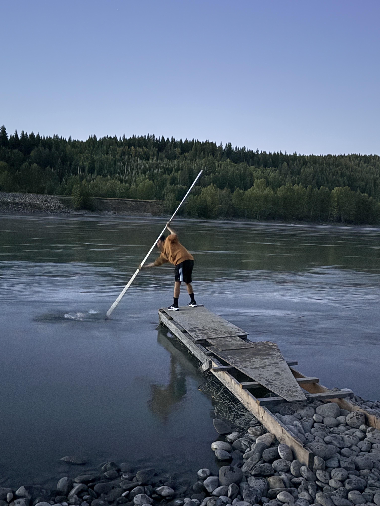
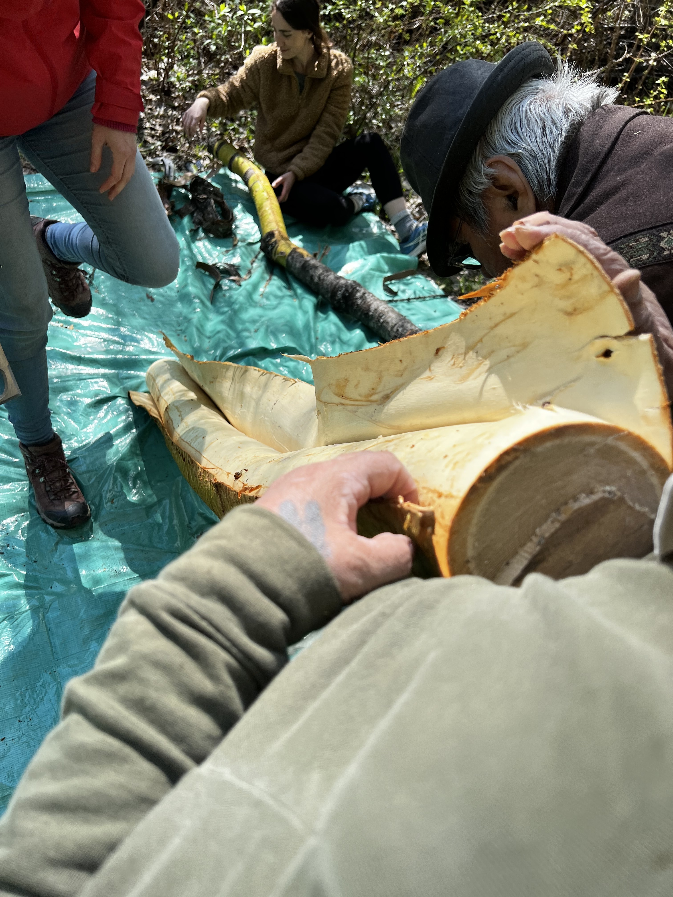

Cultural Events
Welcome to my cultural events page!
Some of the cultural events I've attended.
I've been lucky enough to attend some pretty cool cultural events in my life, here are some of my favorite photos

A photo of a cop helping to process salmon for smoking. I took this photo at a powow in the Okanagan, it was really cool to see how they process the salmon and learn about the cultural significance of it.

A photo of a group of dancers performing at the Lhooskuz powwow. I took this photo at a powwow in the Okanagan, it was really cool to see the different dances and learn about the cultural significance of them.

My brother Gray dripping for salmon on the Fraser River standing on a rickety dock. I took this photo at a cultural event in the Okanagan, it was really cool to see the different activities and learn about the cultural significance of them.

A photo of someone harvesting pin cherry bark for making medicine. I took this photo at a cultural event in the Okanagan, it was really cool to see the different activities and learn about the cultural significance of them.

A photo of someone harvesting cedar bark for making medicine. I took this photo at a cultural event in the Okanagan, it was really cool to see the different activities and learn about the cultural significance of them.

A photo of someone harvesting cedar bark for making medicine. I took this photo at a cultural event in the Okanagan, it was really cool to see the different activities and learn about the cultural significance of them.